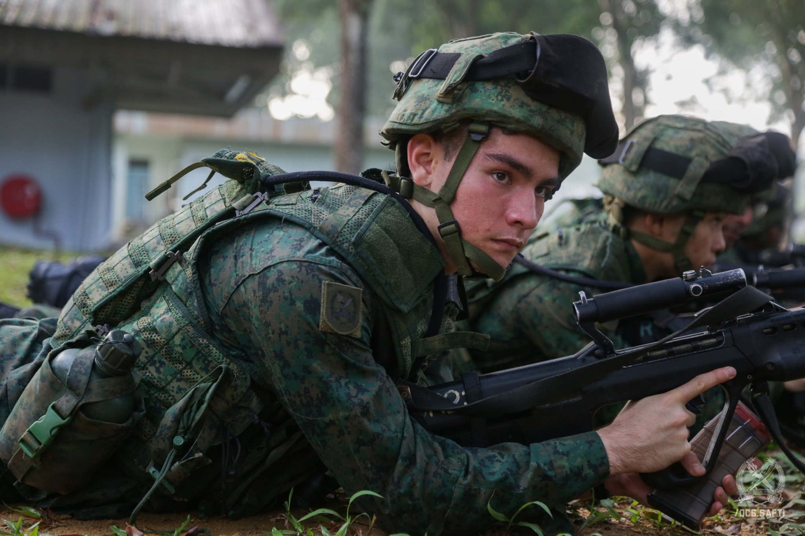
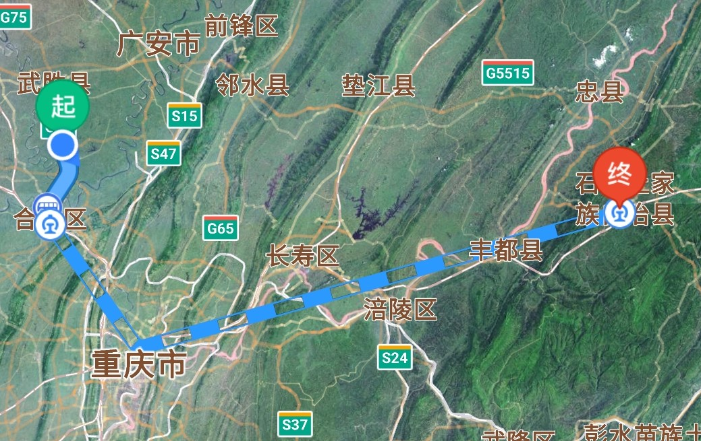
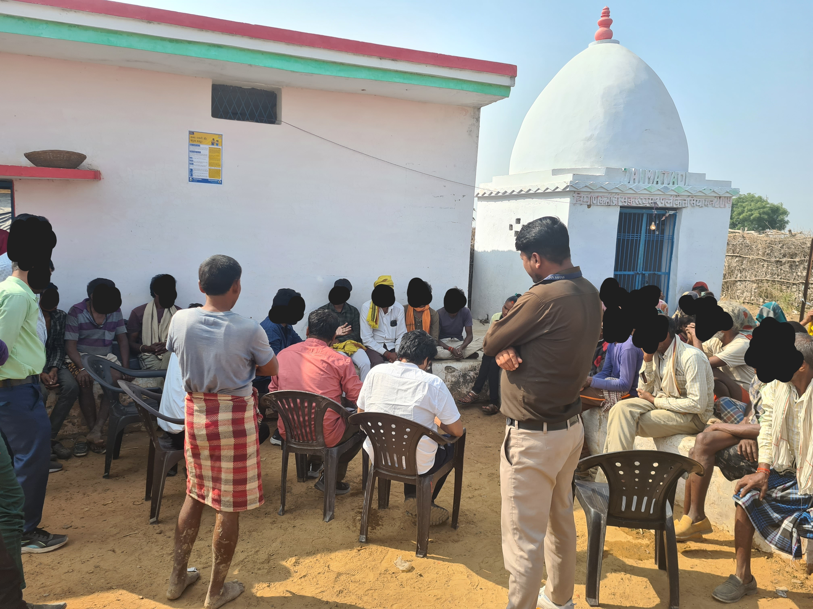
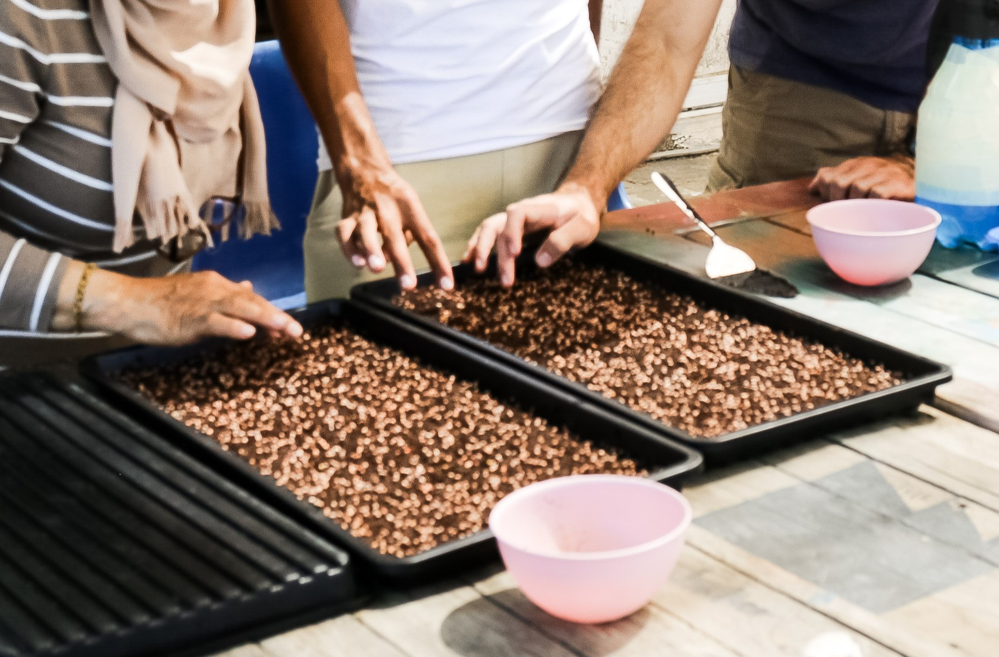
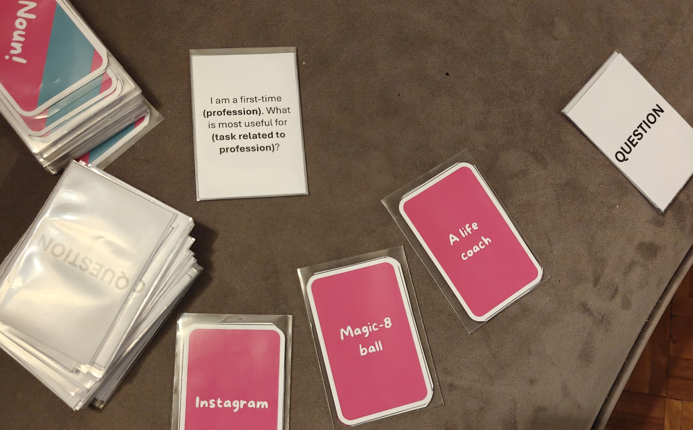

Journey
2017I left school in 2017. I had big dreams (founded on very little research) of starting a development thinktank. It was white-saviour-y and problematic. I promise I've changed.
2018I enlisted and served in the military between 2018-2019. I am not a Singaporean, so I approached conscription as a voluntary exercise that I would 'grow from'. Many nights I regretted this while I cracked a chocolate biscuit in the jungle and prayed that the next day would be better, but I'm proud of this period of my life. I overcame a collarbone break and commissioned as an Infantry Officer. I also detonated C4, averted a hand-grenade accident, and learnt to sleep anywhere.

2019Towards the end of my time in the military, I began writing to poverty labs and development thinktanks to see if I could get myself an internship. All 20 said something to the effect of "you don't have a degree, forget about it". I wondered if I could volunteer somewhere instead while I worked odd jobs to save up for the year.
2020In 2020, I spent 6 months volunteering in Moria Camp, Greece, with Movement on the Ground. I was only meant to stay 3 months, but when COVID got bad and other volunteers left the island, I felt a lot of calm in my decision to stay. That decision changed my life. I grew close to my tent-building team, who taught me Farsi and loved me in a way that I still think about today. I cried when I got home and lay in my own bed – it wasn't fair that I could leave whenever I wanted, but my friends were still there, and indefinitely there. I knew I couldn't go about my life forgetting what I had seen, and I wrote about these months here.

I began a law degree at Oxford towards the end of 2020. I knew I didn't want to practise, but I was conned by the idea of 'transferable skills' which I'm still scratching my head about today. Nonetheless, Oxford was a blessing – besides the people and the beautiful Port Meadow, there were opportunities to pursue my interests. I built my own curriculum (attending more international development lectures than I did law ones), joined a refugee health start-up, and founded a student thinktank helping grassroots NGOs with research pieces. My college even paid for me to go back to the Greek camps for 4 months, as well as to do research in Kenya and Uganda on migrant livelihoods (a summer internship with the Global Development Incubator).

Baidu Maps — a lifesaver
2023After (somehow) graduating with a law degree, I moved to Beijing where I enrolled as a Schwarzman Scholar in Tsinghua University. The program was very international and being in this environment humbled me – I struggled to navigate friendships and found myself worrying about how I stacked up against my peers. During the Chinese New Year break I took the chance to backpack through Sichuan, Chongqing, and Yunnan Provinces to research on China's Poverty Alleviation Resettlement program (a planned relocation project that has moved 10+ million people). It was riveting to dive into ethnographic research in this way but also riveting in the sense that I was being tracked (harassed) by a local police unit in Yilong Xian, Sichuan, for the entirety of my fieldwork. My research was limited by the fact that I speak Chinese like a 12-year-old (on a good day).

A visit to a drought-affected village in India
2024At the end of my year in China, I was very fortunate to be offered a role as a Strategy Associate in People's Courage International's (PCI) Innovation Team. I based out of Bengaluru (Go RCB!) and designed pilot programs for agricultural communities in Indonesia. This entailed a lot of travelling to rice farms in Java, and asking questions like "Could you tell me about the last time your village had to deal with a drought?" This role taught me that I was good at asking questions and putting pieces together, but had some way to go in terms of seeing things move from proposal to action. It was during this year that I did some fieldwork in Madhya Pradesh, where we visited a village experiencing a severe drought, and its residents were unable to grow anything. I thought to myself "surely in this day and age there are urban farming techniques that should mean this doesn't have to be the case", and I spent the next few months researching urban farming techniques obsessively. I remembered how in Greece I'd come across a doctor who'd shared that 90% of the medical issues that she treated from the refugee camp were due to bad diet, and I asked myself if perhaps urban farming had some answers to address this.

On a farm visit in India
2025Fast forward to July 2025, I'd left PCI, and following many conversations with different types of farmers, found myself in Samos, Greece, where I was building a microgreens farm in a community centre outside of a refugee camp. This was the start of my nonprofit, From Seed to Shelter, which is my vehicle for piloting means of improving nutrition outcomes for refugees. The farm went well and remains in operation through La Maison (I gave the set-up to them). I also submitted my results to the World Food Programme, with whom I'm hoping to scale this to relevant contexts. Moving forward, I'm exploring shifting gears a little from dietary diversity to more straightforward food security.

I trained a few members of the community to run the farm, they kept it in operation after I left
Towards the end of 2025 I got very serious about my card game, 100% Disagree, which aims to foster ridiculous conversations. I travelled across the US pitching it on college campuses. This came off the back of a conversation with a card game company that advised that though they liked my game's concept, I'd need to demonstrate 'viral potential' because all their sales were through social media marketing these days. As someone who didn't use social media, I got a very quick insight into this world as I posted a video everyday and tried to get the account going. I flopped at virality, but instead found myself in conversation with a large brand, though this ultimately fell through. I'm still hoping to get this game published, I like to think it's my way of creating 'space for silly' in the world.

2026In 2026 I started out as an Entrepreneur in Residence at Raidical Academy, by Triple A Ventures. This has been an incredibly eye-opening experience – I'm the only person left at the final stage who lacks any business experience, so I'm asking dumb questions all the time like "what's a moat?" and "what's a TAM?". I don't think this will be a 'forever' adventure, but I'm hoping to learn what I can, and bring some skills (and hopefully some financial stability) back to the impact space.